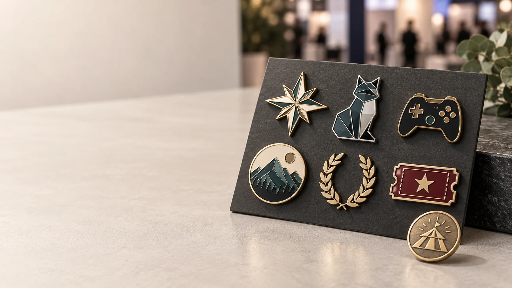

Pines metálicos personalizados para colecciones, stands, ferias y eventos de comunidad.
Un pin personalizado ya no tiene que ser un simple regalo con logotipo. En 2026, los organizadores de ferias, marcas, artistas, clubes y comunidades buscan piezas que ayuden a identificar a un equipo, recordar una experiencia y, en algunos casos, vender una colección completa.
La oportunidad es especialmente clara en los eventos de gaming, anime, cosplay, cultura digital y entretenimiento. El calendario español mantiene una actividad constante en este tipo de encuentros: la Asociación de Ferias Españolas incluye eventos como OWN Valencia, ExpOtaku Badajoz, Guadalindie y Andalucía Play Fest, mientras que Japan Weekend Madrid 2026 está previsto para los días 26 y 27 de septiembre en una nueva localización.
Para una marca, esto significa que el merchandising tiene que hacer algo más que ocupar espacio en una bolsa. Debe ser reconocible, fácil de transportar, coherente con la identidad del evento y viable de producir por lotes.
Qué está cambiando en los pines personalizados para eventos
1. El merchandising se convierte en una pieza de comunidad
En una feria de videojuegos, un salón de manga o un evento de creadores, el público no compra solo un objeto: compra una señal de pertenencia. Un pin puede identificar una comunidad, una edición, un equipo, una categoría de acceso o una colaboración concreta.
Por eso funcionan mejor los diseños con una idea visual clara:
- una mascota o personaje original;
- un símbolo reconocible del evento;
- una forma especial relacionada con el juego, la marca o la actividad;
- una serie de colores para distinguir niveles, equipos o ediciones;
- una fecha o número de edición que convierta el pin en recuerdo.
Si el diseño está relacionado con una franquicia, un artista o una marca externa, confirma primero que tienes los derechos necesarios para producirlo y venderlo.
2. Las colecciones pequeñas superan al modelo de un solo pin
Una colección de tres a cinco diseños puede generar más interés que un único modelo repetido. Además, ayuda a repartir la producción según el tamaño real de la audiencia.
Un sistema de colección puede combinar:
- un diseño principal para todos los asistentes;
- una variante exclusiva para expositores o colaboradores;
- un pin especial para ganadores, staff o invitados;
- una edición limitada numerada;
- una tarjeta común que explique la serie.
La clave es mantener una familia visual: mismo tamaño aproximado, misma proporción de borde, cierre compatible y una paleta de acabados que permita reconocer la colección. Así, cada nueva edición puede cambiar el dibujo sin perder la identidad del evento.
3. El gaming y la cultura pop piden más relieve y formas especiales
Los pines metálicos personalizados tienen una ventaja frente a muchos productos impresos: el relieve, el peso y el borde metálico se perciben al tocar la pieza. Esto resulta útil para iconos, criaturas, mandos, mapas, escudos, trofeos y formas que necesitan destacar en un stand.
Para elegir la técnica:
- Relieve 2D: adecuado para logotipos, texto corto, escudos y diseños con áreas planas.
- Relieve 3D: recomendable cuando la pieza necesita volumen, profundidad o una figura central con más presencia.
- Esmalte blando: aporta una textura perceptible y suele funcionar bien en colores vivos y diseños de merchandising.
- Esmalte duro: ofrece una superficie lisa y una apariencia más cuidada para pines corporativos o colecciones premium.
- Impresión protegida con resina o epoxi: puede ser útil para degradados, ilustraciones y detalles que no se resuelven bien con esmalte tradicional.
No conviene elegir la técnica solo por moda. El tamaño final, el número de colores, el grosor de las líneas y el presupuesto deben revisarse juntos. Puedes comparar opciones en nuestra guía de pines esmaltados personalizados.
4. La sostenibilidad se traslada del discurso al packaging
El envase forma parte de la experiencia, pero también forma parte de la conversación sobre costes, materiales y residuos. La Comisión Europea indica que el nuevo marco de envases empezó a aplicarse el 11 de agosto de 2026 y que desde 2028 se prevé un sistema armonizado de etiquetado para facilitar la separación de residuos.
Para un pedido de pines, esto se puede traducir en decisiones prácticas:
- utilizar una tarjeta de papel en lugar de varias capas de plástico;
- reducir el tamaño del empaque cuando no aporte protección real;
- separar por lotes en cajas reutilizables durante el transporte;
- indicar el material del empaque con precisión;
- evitar promesas como “100 % ecológico” si no existe una certificación o dato que las respalde.
La sostenibilidad no significa que todos los proyectos deban usar el mismo empaque. Un pin para venta al detalle, un set para prensa y una insignia para staff tienen necesidades diferentes. Lo importante es definir el uso antes de pedir precio.
Qué tipo de pin conviene para cada evento
| Objetivo del evento | Producto recomendado | Decisiones principales |
|---|---|---|
| Stand de artista o marca independiente | Pin esmaltado personalizado | Forma especial, colores, tamaño, tarjeta y cantidad por diseño |
| Feria gaming, anime o cosplay | Colección de pines metálicos | Serie visual, variantes, edición limitada, derechos y packaging |
| Congreso o feria B2B | Pin corporativo o insignia metálica | Logotipo, acabado, cierre, tarjeta de presentación y presupuesto unitario |
| Staff, seguridad o voluntariado | Insignia o placa de nombre metálica | Legibilidad, peso, imán o alfiler y uso durante muchas horas |
| Carrera, torneo o campeonato | Medalla o token metálico | Relieve, cinta, categorías, fecha y empaque |
Si el objetivo es vender, el diseño debe leerse rápidamente desde un expositor. Si el objetivo es identificar a un equipo, el nombre y la función deben ser visibles. Si la pieza se entrega como premio, el peso, el relieve y la presentación tienen más importancia.
Cómo preparar el brief de producción
Una cotización de pines personalizados para eventos será más útil si incluye estos datos:
- Logotipo, ilustración o referencia visual, preferiblemente en AI, SVG, EPS o PDF.
- Número de diseños y cantidad de unidades por diseño.
- Medida aproximada, grosor y orientación de cada pieza.
- Número de colores y técnica preferida: esmalte blando, esmalte duro, impresión o resina.
- Acabado metálico: oro, níquel, cobre, latón, negro o acabado antiguo.
- Tipo de cierre: mariposa, goma, imán, doble poste o broche de seguridad.
- Uso final: venta, regalo, acreditación, uniforme, premio o kit de bienvenida.
- Tarjeta, bolsa, caja, numeración o separación por lotes.
- País de entrega, fecha del evento y fecha límite para recibir el pedido.
Si aún no tienes el arte final, una referencia visual, la cantidad aproximada y el uso del producto bastan para iniciar una recomendación técnica. Para comparar propuestas, revisa que todos los proveedores estén cotizando el mismo tamaño, acabado, cierre, empaque y cantidad.
Calendario recomendado para un evento
Los pedidos para ferias y festivales suelen concentrar varias decisiones en poco tiempo: diseño, aprobación, molde, muestra, producción, montaje y transporte. Como margen de planificación, conviene empezar entre ocho y diez semanas antes de la fecha del evento, especialmente si hay varios diseños o packaging personalizado.
- Semana 1: definir objetivos, cantidad, diseños y presupuesto.
- Semanas 2–3: revisar arte, medidas, colores, acabados y cierre.
- Semanas 3–4: aprobar el arte técnico y, si aplica, la muestra.
- Semanas 5–7: fabricar, revisar, montar y preparar el packaging.
- Semanas 8–10: organizar transporte, recepción, inventario y distribución.
Este calendario es una referencia de planificación, no una promesa de plazo. La fecha real depende de la complejidad del molde, la cantidad, el número de variantes y el tipo de empaque. Indica siempre la fecha fija del evento en el primer contacto.
Errores frecuentes al pedir pines para una feria
Diseñar el pin sin pensar en la distancia de lectura
Un texto que parece legible en pantalla puede perderse en una pieza de 25 o 30 mm. Simplifica nombres largos, revisa el grosor de las líneas y prioriza un símbolo fuerte.
Mezclar demasiadas técnicas en un solo pedido
Relieve, esmalte, impresión, resina, dos baños y packaging complejo pueden aumentar el coste y el riesgo de diferencias entre diseños. Es mejor definir una jerarquía: qué elemento debe destacar y qué detalle puede simplificarse.
Elegir el cierre después del diseño
El peso, la forma y el lugar de uso influyen en el cierre. Un pin grande para mochila no necesita la misma fijación que una insignia para uniforme o una pieza para tarjeta.
Prometer sostenibilidad sin especificar materiales
Describe el papel, el plástico, la caja o la forma de separación que realmente vas a utilizar. La precisión genera más confianza que una etiqueta ambiental genérica.
Pedir una sola muestra para una colección completa
Si hay varios colores, tamaños o técnicas, conviene revisar las diferencias que afectan a la colección. La consistencia entre referencias es tan importante como la calidad de cada pin individual.
Preguntas frecuentes
¿Qué cantidad mínima necesito para fabricar pines personalizados para eventos?
Depende del número de diseños, el molde, el tamaño, el acabado y el tipo de empaque. Envía una cantidad aproximada por referencia para recibir una recomendación realista.
¿Es mejor el esmalte blando o el esmalte duro para una feria?
El esmalte blando suele ser una opción versátil para colores vivos y merchandising. El esmalte duro ofrece una superficie lisa y una presentación más premium. La elección final depende del diseño, el uso y el presupuesto.
¿Puedo pedir pines personalizados con tarjeta?
Sí. Una tarjeta puede contar la historia del diseño, mostrar la edición, incluir un código QR o facilitar la venta en un stand. Define el tamaño, el tipo de papel y si necesitas montar el pin antes del envío.
¿Qué diferencia hay entre un pin y una insignia para eventos?
“Pin” suele referirse a una pieza pequeña para solapa, mochila, gorra o merchandising. “Insignia” puede ser más grande y estar relacionada con identidad, uniforme, acceso, staff o reconocimiento. El uso final determina la forma, el peso y el cierre adecuados.
Diseña una pieza que tenga vida después del evento
Los mejores pines personalizados para eventos de 2026 no son necesariamente los más grandes ni los que tienen más colores. Son los que conectan con una comunidad, se reconocen rápido, resisten el uso previsto y pueden repetirse en futuras ediciones.
Si estás preparando una feria, un torneo, un evento gaming, una activación de marca o una colección de artista, comparte el diseño, la cantidad, el tamaño, el uso y la fecha de entrega. En Insignia Metálica podemos ayudarte a comparar pines metálicos, esmalte, relieve, cierres y packaging antes de producir.